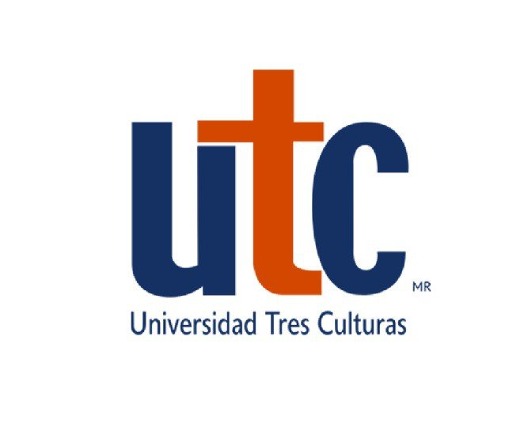

Universidad Tres Culturas
Licenciatura en ingeniería en sistemas computacionales
Del grupo 7ZLEINSCVA
Integrado por:
Bautista Torres Jonathan
Mojica Abrego Jr. Antonio
Zapien Lomeli Harold Alejandro
Para la materia de Ética y responsabilidad social
Impartida por la maestra de grado Arellano Orozco Erika Maribel
Con la fecha 02 de octubre del 2022
Índice
I. INTRODUCCIÓN
II. VALORES ANALIZADOS DENTRO DE LA PELÍCULA
III. FICHA TÉCNICA
IV. SINÓPSIS
V. DEFINICIÓN CONCEPTUAL
VI. IDENTIFICACIÓN DE VALORES
VII. IMPLICACIÓN DE LA ÉTICA EN LA LICENCIATURA DE SISTEMAS COMPUTACIONALES
Introducción
La ética y los valores son parte del ser humano. Define su actuar y pensamientos, por lo que el estudio de estos para conocer de mejor manera el comportamiento humano es de suma importancia. En este trabajo se analiza desde la ética la película mexicana “3 idiotas”, donde a lo largo de esta se identifican diversos valores y antivalores en los personajes, donde previamente se conocerán estos conceptos y así será más fácil el entendimiento de las acciones de los individuos presentes en la filmación.
Valores analizados dentro de la película
| Valores | Antivalores |
|---|---|
| Justicia | Arrogancia |
| Libertad | Deshonestidad |
| Honestidad | Arrogancia |
| Lealtad | Desigualdad |
| Individualidad | Egoísmo |
| Heroísmo | Envidia |
| Independencia | Esclavitud |
| Perseverancia | Irrespeto |
| Valentía | Injusticia |
| Amor | Odio |
| Autocontrol | |
| Tolerancia | |
| Compromiso | |
| Convicción | |
| Disciplina | |
| Empatía | |
| Altruismo | |
| Respeto |
Ficha tecnica
1Nombre
3 idiotas
2Presupuesto
7.7 millones de dólares
3Duración
106 minutos
4País
México
4Diseño de producción
Alejandro García
5Diseño de sonido
Matías Barberis
6Música original
Álvaro Arce
7Editor
Jorge García Porri y Camilo Abadía
8Director de fotografía
Javier Morrón AMC
9Post producción
Carlos Morales y Vanessa Hernández
10Productores asociados
Ari Borovoy Carlos Bolado José Levy María Arriaga
11Co-producción
Alexis Fridman
12Productores ejecutivos
Martha Higareda Enrique Ramírez Ricardo Kleinbaum Mattías Ehrenberg Vidhu Vinod Chopra
13Guion
Antonio Abascal Carlos Bolado Martha Higareda Cory Brusseau
14Dirigida
Carlos Bolado
15Producida
Miguel Mier Bernardo Rugama Jimena Rodríguez
Sinópsis
Tres mejores amigos que estudian una ingeniería los cuales se ven envueltos en aventuras que ayudan a mejorar su amistad, son catalogados como el club de los idiotas los diferentes acontecimientos los llevan a estar bajo supervisión del director Escalona que en algunas ocasiones busca la expulsión de Pancho (Francisco), Beto y Felipe Ochoa.
Toda la trama de la película comienza cunado Felipe recibe una llamada de Isidoro al comentarle que aprecio Pancho que desapareció durante cinco años después que Isidoro descubriera la verdad sobre la identidad. Felipe Ochoa se encontraba estudiando para enorgullecer a su enorme familia y obtener mejores recursos, Beto deseaba convertirse en un fotógrafo, pero por la presión de su padre para convertirse en un ingeniero termino estudiando algo en lo que no era muy bueno y Pancho un líder nato el cual por ser introvertido se ganó la admiración de los demás ingenieros y la envidia de Isidoro que solo sentía envidia por los logros de Pancho.
Por lo por la forma introvertida de Pancho obtuvo la antipatía del director Escalona que buscaba la perfección de los futuros ingenieros para evitar la pérdida de más vidas humanas como le sucedió a su esposa por el mal diseño de un puente. La hija menor de Escalona Mariana se vuelve el amor de Pancho que hace todo lo posible para que ella le corresponda su amor, en la boda de la segunda hija del director los tres amigos salen perjudicados por arruinarla causando el primer intento de expulsión de los amigos.
Felipe Ochoa si es expulsado por haber interrumpido en la casa de Escalona y haber arruinado su automóvil, por el motivo de la noticia e imaginarse la decepción que tendrá su familia es atropellado saliendo de la universidad causándole, sus amigos hacen todo lo posible para despertarlo le dijeron que no lo habían expulsado. Después de despertar se presentó a una entrevista de trabajo el cual se dio cuenta que era un miedoso, pero con la ayuda de su amigo Pancho obtuvo más seguridad en sí mismo, logrando conseguir el trabajo por ser él mismo.
Beto consiguió el trabajo con el fotógrafo que admiraba lo que provocó que le comentara a su padre que no quería ser ingeniero que prefería pasar su vida tomando fotografías profesionales logró convencer a su padre. Cuando la segunda hija de Escobedo entro en parto dentro de las instalaciones de la Universidad Pancho la ayudo a dar luz con la ayuda de sus amigos, es ahí donde Pancho opta por desaparecer por haber suplantado la identidad de alguien más.
Cinco años después Beto, Felipe Ochoa y Isidoro salen en busca de su gran amigo pasando antes a la boda de Mariana para que fueran a buscar a su amigo, cuando encuentran a Pancho sabiendo que su verdadero nombre es Poncho Isidoro presume de haber obtenido más fama y que tendría una cita con el presidente del Teltec sin darse cuenta de que el presidente es Poncho.
Definición conceptual
Valores
Estos son elementos de la ética, la cual estudia la moralidad y el razonamiento entre el bien y el mal del ser humano. Estos elementos definen cualidades psicológicas de las personas.
Lista de valores
Antivalores
Estos son lo contrario a los valores. El actuar de manera opuesta a lo que se supone se tendría que hacer, debido a una falta de moral y ética, la cual pudo ser dada debido a la deficiencia en conocimientos y estudios. Ejemplos de estos serían:
Moral.
La moral tiene cierto parecido con el concepto de ética, sin embargo, no podrían ser más diferentes. Mientras que la ética se centra en el estudio de los valores morales en un individuo, la moral es el estudio de las costumbres, normas, leyes, tabúes y demás cosas establecidas por una sociedad. Dicho esto, la ética podemos verla en los valores que se busca implementar en la sociedad, tales como la honestidad, el respeto, la responsabilidad, la lealtad, la valentía, etcétera. Mientras que la moral puede ser vista en las diferencias que existen entre las diferentes culturas actuales. Mientras que la moral podemos usar de ejemplo diferencias entre Corea y México. Allá la costumbre es que, en una reunión, la persona mayor sea la que esté hablando y los menores escuchen, a comparación de México que no existe tal formalidad. Con Canadá, que en las bodas los invitados tienen que aportar dinero para la realización de esta mientras que acá es organizada totalmente por la familia. Todas estas son diferentes costumbres y culturas, y son estas las que definan la moral de una sociedad.
Moralina.
La moralina es una moralidad a medias o falsa. Es cuando un individuo actúa o predica ciertos valores morales los cuales están lejos de formar parte de él. La manera más sencilla de entender este concepto es a través del lamentable gobierno de nuestro país. Absolutamente todos los participantes en épocas de campaña exponen sus metas y objetivos para cuando alcanza el puesto al que están apelando, sin embargo, muy raras veces veremos esos valores que los identificaban en campaña una vez ya hayan ganado. Esto se identifica al ver las deficiencias que siguen existiendo en el país, tales como la corrupción, desvío de fondos, conflicto de intereses, etcétera.
¿Qué es el código ético?
En todas las profesiones y deportes existen ciertas normas y valores a seguir para el cumplimiento de los reglamentos y funciones de estos de manera ética. Un ejemplo de esto es la carrera que estamos cursando, licenciatura en ingeniería en sistemas. En esta profesión se aprenden diferentes conocimientos y herramientas los cuales, se quiera o no, pueden ser usados de manera negativa hacia otras personas. Tal puede ser el famoso (Hacking) que sufren algunas personas, o la vulneración de datos en redes sociales o correos, como puede suceder en las filtraciones de bases de datos y servidores ocasionados por un programador con fines propios. La aceptación de estos riesgos lleva a aceptar ciertos valores donde se encuentra la honestidad y responsabilidad por parte de nuestras habilidades. Es aquí donde entra el código de ética de la ingeniería en sistemas.
Identificación de valores
Observando la película “3 idiotas” se identifican tanto valores como antivalores. Entre los valores está el heroísmo, representado por el personaje de Pancho en su primer encuentro con Felipe y Beto, esto al salvarlos de un grupo de estudiantes que los estaban acosando. En ese mismo acto se deja ver la valentía que este tiene, además de ver esto mismo escenas más adelante en su encuentro con el profesor Escalona al expresar sus ideas sobre enseñanza y que la ideología presentada por el profesor basada en perfección estaba errónea, ya que a través de los errores es de donde se aprende y mejora.
En una de las primeras escenas de la película, cuando Isidoro les avisa a Felipe y Beto de que encontraron a Pancho, estos muestran una falta de respeto hacia Isidoro llamándolo de manera despectiva “inodoro”, y este presenta una arrogancia al presumir su situación económica y logros obtenidos, en busca de hacer menos al personaje de Pancho con quien tenía una enemistad, debido a la envidia que sentía Isidoro hacia Pancho debido a sus cualidades.
La falta de libertad, que podría ser traducida en esclavitud, se ve en el personaje de Beto y su relación con su padre. Beto es apasionado por la fotografía, pero su padre tiene un concepto anticuado y obligatorio en el cual piensa que debe de estudiar una ingeniería para poder triunfar, sin tener en cuenta e ignorar los sentimientos de su hijo. Eso hasta que Beto consiguió una oportunidad de trabajo con la cual le pudo demostrar a su padre su habilidad y profesionalismo en ese ámbito, haciéndolo cambiar de parecer y aceptando su decisión. Decisión la cual le representa su individualidad, independencia, convicción y perseverancia a querer ser lo que quiere ser.
IMPLICACIÓN DE LA ÉTICA EN LA LICENCIATURA DE SISTEMAS COMPUTACIONALES
Bien se comentó antes sobre lo que es el código ético y se uso de ejemplo este código en la carrera de ingeniería en sistemas.
Si se busca en internet (código ético de la ingeniería en sistemas) saldrán varias páginas web las cuales recopilan los valores y principios éticos que un ingeniero debe de cumplir. Ya que, como las demás profesiones, la responsabilidad no se limita únicamente a las obligaciones establecidas dentro de un trabajo, sino que también trasciende fuera de este a través de los valores tales como la confidencialidad, responsabilidad, honestidad, todo esto visto en un escenario donde el ingeniero abuse del poco conocimiento del cliente y busque abusar de su poder al ya sea obtener y usar de manera indebida su información, mentir en los tiempos y softwares usados para la realización de cierto proyecto, etcétera.
Dentro de estos listados de códigos éticos podemos encontrar que se mencionan en común los siguientes puntos: